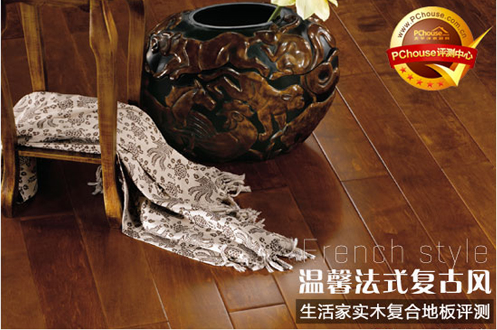

温馨法式风 生活家实木复合地板评测

我一直以为以前的伤已经很深，很痛了
我一直也以为自己不可能会再有爱人的能力了,
我一直更以为自己从此以后不会再相信世界上的真爱了,
直到遇见你,
让我明白了原来我还可以有笑容,
让我知道了原来我仍可以拥抱春天,
大家都说男才女貌,
都羡慕我们的默契,
都流传我们的故事,
一直心想是一种奇迹,
并坚信这个奇迹可以一直延深,
于是，我对着老天道感谢,
感谢他让我碰到了一个好男人,
感谢他让我离开了郁闷的昨天,
感谢他让我走出了人生的低谷,
可是，为何会这样,
原来我的痛还不止以前那样,
上天跟我开了一个更大的玩笑,
我已经没有了眼泪,
麻木的痛和伤或许只能用无助和凄凉来形容,
我甚至想告别这所有的一切,
|
生活家秋色赛尔实木复合地板基本信息
|
| 品牌 |
生活家 |
| 系列 |
普罗旺斯系列 |
| 名称 |
桦木-秋色赛尔 |
| 规格 |
1210*165*14.6mm |
| 产品类别 |
多层实木复合 |
| 主要工艺 |
平面仿古，手工倒角，手工擦色 |
| 评测方法 |
外观纹理、拼接效果、承重性、耐磨性、抗污性、防火阻燃、防水防潮 |